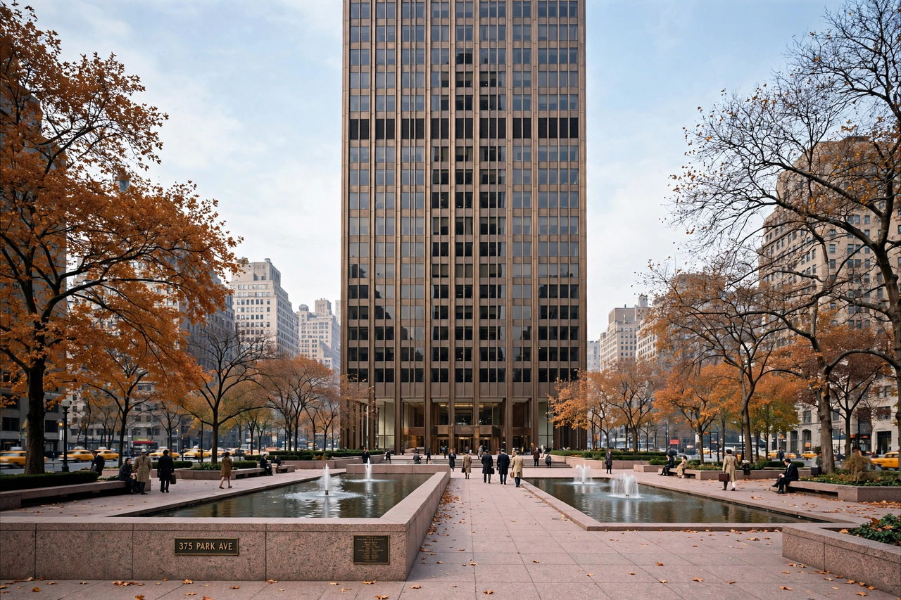

International Style

The International Style is a major architectural style that developed in the 1920s and 1930s and was exported worldwide, becoming the dominant idiom for corporate and institutional building through the mid-twentieth century. The term was coined by historian Henry-Russell Hitchcock and architect Philip Johnson for their 1932 Museum of Modern Art exhibition Modern Architecture: International Exhibition in New York.
Characteristics
Hitchcock and Johnson identified three principles: expression of volume rather than mass, regularity of composition rather than axial symmetry, and avoidance of applied ornament. In practice the style meant smooth, undecorated surfaces (often white render or glass curtain walls), flat roofs, ribbon windows, open plans made possible by steel or concrete frames, and pilotis lifting buildings off the ground — features codified by Le Corbusier, whose Villa Savoye (1931) is a canonical example, alongside Walter Gropius's Bauhaus building at Dessau and Ludwig Mies van der Rohe's Barcelona Pavilion and later Seagram Building.
Spread and criticism
Emigré architects carried the style to the United States, Palestine, Latin America and beyond after the 1930s. From the 1960s it was attacked as monotonous, placeless and ill-suited to local climates and cultures; postmodernism and later movements arose partly in reaction, though International Style buildings remain landmarks of modernism and many are now protected.
See also: Le Corbusier, Bauhaus